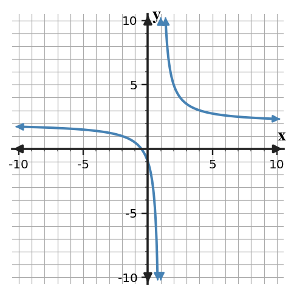
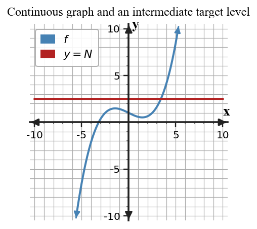

Core idea: Asymptotes describe limiting behavior; the Intermediate Value Theorem gives an existence guarantee only when its hypotheses are met.
You will interpret infinite limits, limits at infinity, asymptotes, and IVT conclusions.
Interpret infinite limits and limits at infinity to identify asymptotic behavior, and apply the Intermediate Value Theorem when its hypotheses are satisfied.
I can statements
Skim the terms now. Add meaning as each term is introduced in the notes.
This is a long-range preview for this section. Do not solve it yet. Circle anything familiar, underline symbols, labels, conditions, data, or features that seem important, and write short notes about what you think may matter later.

Describe what the graph suggests as $x$ approaches 1 from each side and as $x$ becomes very large in magnitude. Which features are approached but need not be reached?
Directions
Read in short chunks. Annotate the prose and representations together. Mark evidence, conditions, important quantities, labels, patterns, and questions.
An infinite limit describes outputs that increase or decrease without bound as inputs approach a value. For example, $\lim_{x\to a^-}f(x)=-\infty$ means that as $x$ approaches $a$ from the left, $f(x)$ becomes arbitrarily large in the negative direction.
A line $x=a$ is a vertical asymptote when the function has infinite behavior on at least one side of $a$. The asymptote is not a function value. It records what happens to outputs near that input.
Stop and Discuss
Input target
$x\to a$ identifies the vertical location.
Direction
$a^-$ or $a^+$ tells which side of the asymptote is followed.
Output behavior
$+\infty$ means increases without bound; $-\infty$ means decreases without bound.
For $f(x)=2+\frac{3}{x-1}$, state the vertical asymptote and horizontal asymptote.
For $g(x)=-1+\frac{4}{x+2}$, identify both asymptotes.
Interpret $\lim_{x\to4^-}f(x)=-\infty$ in words.
Interpret $\lim_{x\to-2^+}g(x)=+\infty$.
The Intermediate Value Theorem (IVT) starts with a condition: $f$ must be continuous on a closed interval $[a,b]$. If a number $N$ lies between $f(a)$ and $f(b)$, then there is at least one $c$ in $[a,b]$ such that $f(c)=N$. If $N$ lies strictly between the endpoint outputs, then the guaranteed $c$ lies in $(a,b)$.
IVT guarantees existence, not uniqueness and not an exact location. Before naming IVT, verify the continuity hypothesis and verify that the target output is between the endpoint outputs.

Stop and Discuss
Hypothesis 1
$f$ is continuous on $[a,b]$.
Hypothesis 2
$N$ is between $f(a)$ and $f(b)$.
Conclusion
At least one $c\in[a,b]$ satisfies $f(c)=N$; for a strictly intermediate $N$, $c\in(a,b)$.
A function is continuous on [1,5], with f(1)=-2 and f(5)=7. What does IVT guarantee about the value 3?
A continuous function has h(0)=6 and h(4)=-1. What does IVT guarantee about h(c)=2?
A limit at infinity asks what the outputs approach as inputs grow without bound in the positive or negative direction. If $\lim_{x\to\infty}f(x)=L$ or $\lim_{x\to-\infty}f(x)=L$, then $y=L$ is a horizontal asymptote for that end behavior.
A horizontal asymptote is not a barrier. A function may cross the line at finite input values and still approach it as $x\to\infty$ or $x\to-\infty$. The asymptote is determined by the end-behavior limit, not by whether crossing occurs.
Stop and Discuss
A graph crosses its horizontal asymptote. Does that violate the definition of a horizontal asymptote? Explain.
Can a function cross a horizontal asymptote and still have that asymptote?
| Term / notation | Meaning in this section |
|---|---|
| infinite limit | A limit statement describing outputs that increase or decrease without bound near an input. |
| vertical asymptote | A vertical line $x=a$ associated with infinite one-sided or two-sided behavior near $a$. |
| limit at infinity | A statement about the output approached as $x\to\infty$ or $x\to-\infty$. |
| horizontal asymptote | A horizontal line $y=L$ described by a finite limit at positive or negative infinity. |
| Intermediate Value Theorem | For a function continuous on $[a,b]$, every output value between $f(a)$ and $f(b)$ is attained at least once on the interval. |
| Mistake | Why it is tempting | Check instead |
|---|---|---|
| Treating $x=a$ as the value of a vertical asymptote. | The asymptote is written with an equation. | Use it as an input location and describe output behavior with an infinite limit. |
| Saying $+\infty$ is a finite limit value. | Infinity appears on the right side of limit notation. | Interpret it as unbounded growth, not as an ordinary real-number output. |
| Assuming a horizontal asymptote cannot be crossed. | The word “asymptote” sounds like a barrier. | Check the end-behavior limit; finite crossings are allowed. |
| Invoking IVT without continuity. | The endpoint values straddle the target. | First state that the function is continuous on the required closed interval. |
| Claiming IVT gives exactly one solution. | The theorem guarantees a solution exists. | State “at least one”; uniqueness requires additional information. |